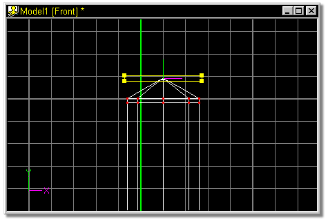

This cross section will be used to close off the top of the candle. Still
working with the selected points, locate the scale section of your property panel.
Highlight the top entry by double clicking in the numeric entry box. The
default scale, 100 will highlight blue as shown in figure 23A.
Type 1, and press the Tab key.
The middle numeric entry box will highlight blue. Notice also that the
previous box reset to 100% after scaling.
Once, again, type 1 and press the Tab key.
The next numeric entry box will highlight blue.
Type 1 one final time, and press the Tab key.
The model window should look similar to Figure 24.
